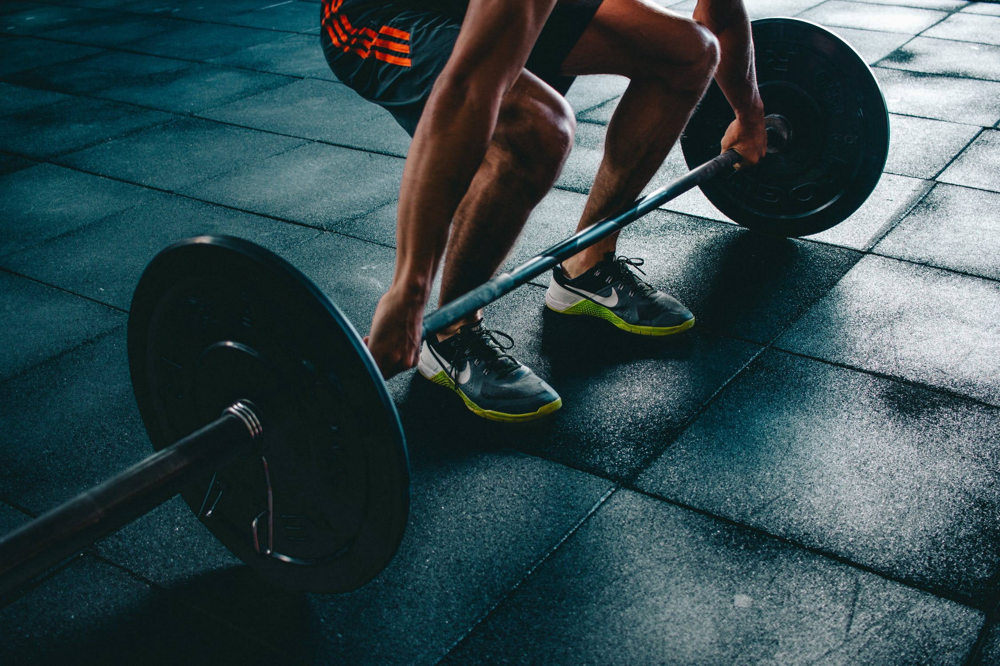

Cricket
Increased Stamina and Endurance:
The constant running across the field helps to increase stamina.
Balance:
Balance is also something one can improve through this sport because of the utmost concentration required while playing cricket.
Flexibility:
Learning to move freely is something that comes with practice in cricket, thus improving on flexibility of an individual.
Physical Fitness:
All the sprinting and bowling requires you to be constantly up and running, which increases your physical activity level.
Social Skills:
It’s a great way to interact with people and its also a great way to learn to cope with winning or losing. Cricket matches can last several hours, and within that time one must work with the team in a cooperative manner to develop and initiate game strategies and win the match.
Football
1. Improves Aerobic Capacity
Running at any intensity for 90 minutes requires a high level of stamina. Therefore, football players often have a tremendous amount of aerobic capacity being able to go from walking to sprinting and have a fast recovery to do it again, and again, and again. Researchers from the Peking University back this up in a study they’ve authored.
2. Improves Cardiovascular Health
This is probably one of the best benefits of playing Football. The average player runs about 8 to 11 kilometers in a full game. The constant walking, jogging and running help keep the player’s heart rate up, providing an excellent cardiovascular exercise. This constant movement helps players strengthen their hearts, resist plaque build-up in the coronary arteries, reduce their blood pressure and burn excess calories.
3. Lowers Body Fat and Improves Muscle Tone
Football is a great sport for burning fat because it works the muscles and your heart in different ways. Football builds more muscle mass and burns more fat by recruiting both slow-twitch and fast-twitch muscle fibers. As a general workout, football playing burns more calories than typical workouts because players are forced to switch between using the aerobic and anaerobic energy pathways.
4. Builds Muscle Strength
Lower body strength is required for kicking, jumping, tackling, twisting and turning. It also forms the foundation for explosive speed. Upper body strength is required for shielding the ball, holding off opponents, throw-ins and also contributes to overall power and explosiveness. Regular football playing builds strength by using the whole body.
5. Increases Bone Strength
In general, bone density decreases as people get older. The repeated weight-bearing loads on the body during a football match are an excellent way to increase the strength of our skeletal frame. Maintaining fitness through football throughout a lifetime is a great way to keep bones strong.
6. Teaches Coordination
Due to shifts between walking, running and sprinting, coordination is key to football. Body coordination is improved through the complex movements like dribbling, turning and passing, which are performed at varying rates of speed and direction. Hand-eye coordination is improved when players either kick the ball or receive a pass from someone. The better the coordination, the better advantage in a match.
7. Promotes Teamwork and Sharing
While fitness goals are generally very personal, we can all benefit from sharing common goals with others who push us towards them. The lessons that players learn on the field translate to the rest of their lives and the camaraderie teammates share in unparalleled. The ability to work with others to reach a common goal is powerful when related to everyday life- in other words, join a team.
8. Increases Cognitive Brain Function
Football helps increase skills in concentration, persistence, and self-discipline because it is a fast-paced game that requires quick decisions on the field. Even when the tempo appears to slow down, players are constantly looking for territorial advantages, trying to position themselves to receive a pass or to defend an area the opponent may attack.
9. Increase Confidence and Self-Esteem, and Helps to Reduce Anxiety
Building physical strength and endurance help build confidence in a player both on and off the field. Confidence and self-esteem not only impact sports performance, but also performance in school, career, family life, and friendships. Also, as with all forms of exercise, the feel-good endorphins released into the body after a match are major stress and anxiety reducers. Several studies point to exercise as being a highly effective treatment for depression and anxiety.
10. Anyone Can Play, Anywhere
Football is not an expensive or prohibitive sport. All that is needed is space and a ball. It is a relatively simple sport to catch onto and is played mostly outdoors, which we already mentioned as being healthy here.
